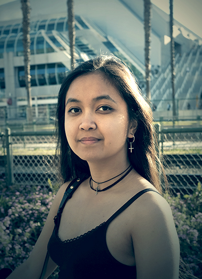
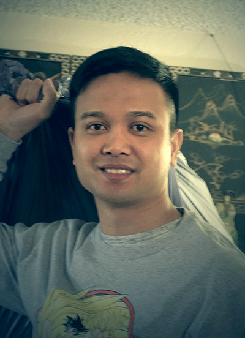
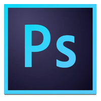
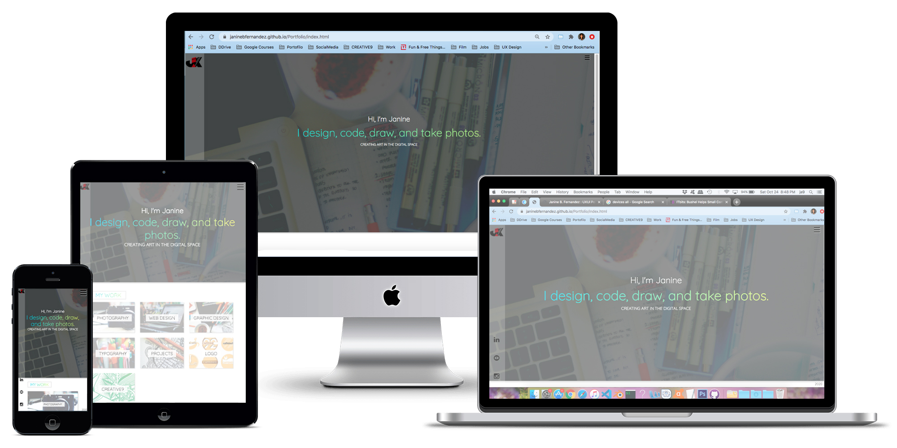

UXUI Research
Portfolio Design
My Portfolios design process.
Visitors
Joyce, 21

OccupationVisual Art Influencer
LocationSeattle, WA
StatusSingle
Interest & Hobbies Joyce likes to do a variety of things when she is not posting online. Her hobbies include writing, reading, gaming, jogging and top of that takes care of her pet fish and avocado plants. Because she is so busy she needs some one to manage her website.
Goals :Wants an ecommerce website for her digital artwork. This website should be customized with lots of graphics and design to compliment her artwork. Because she has a wide array of artwork, she wants simplicity over anything.
Frustrations :Due to the number of assets she produces each week, it is very difficult for her to stay organize and get the correct content where it needs to be.
Pedro, 28
OccupationPharmacist
LocationOrange County, CA
StatusLive-in Partner
Interest & HobbiesPedro works 12 hours a week and maintains a very busy schedule. He likes to go hiking on the weekends and explore different restaurants. Pedro loves browing online during his free time specially when it comes to online shopping.
Goals :Aside of being a Pharmacist, Pedro also likes to add custom art on his car.
Frustrations :Since the art work is being placed on a behicle, it is very important that the piece is perfect. As you all know there is no such thing as perfect, so Pedro often changes his mind mid production.
Jay, 32

OccupationBusiness Owner
LocationSan Diego, CA
StatusMarried, 2 Kids
Interest & HobbiesJay owns a gaming company called Not Among Us. He is very busy with work and during his free time he spends it with his family. Jay needs someone who can manage his business digitally online specially with promotions and a website.
Goals :Accomplish marketing with his gaming company online. In need of a digital content creator and a website manager.
Frustrations : Running a business requires a lot of work and often operations and sales is valued more that anything that the creative department is left to the side. Jay's company needs to focus on the creative department and successfully promote the product.
RESEARCH
Determine the Content
Before starting, I needed to know what content I'm going to put on my Portfolio. I had numerous work samples I wanted to include but reallized this might be too overwhelming, so I decided to cut down and prioritize what's important. Having the tools and asset to create everything, I decided to produce 100% of the content occasionally relying on a google search if I need guidance.
Portfolio Samples
Look at other peoples Portfolio. Know what type of Portfolio you're making and then search for examples. This process was very important because it gave me a sense of direction. It showed me what's in trend, the most important content on a page, and it created inspiration on the design.
Explore Designs
After seeing several Portoflio samples I was able to pick out what I like and didn't like in terms of design. Some portfolios were plain, others were too much, and a good number was just right. When looking at a page it should'nt give you a hard time. You should be able to determine what the page is about and be able to easily navigate through the page. My focus revolved around these two components and led me to my final design.
Functionality
My Portfolio is geared not only towards my design but also front-end development. I wan't to apply my skills and create something from scratch using HTML, CSS and Javascript. After finalizing the layout, heavy researh was needed to make sure the correct code is implemented for full functionality. I also wanted to apply reusable code due to the consistancy of the design. Having prior knowledge in programming helped a lot because I knew where I can go to get the resources I need.
- Accessibility
- Browser Compatibility
- Responsive
- Design Contrast
- Simplicity
- Easy Navigation
WIRE FRAMES/PROTOTYPE
Tools
The main tools that helped me build this project is Photoshop, Visual Studio Code, and Git Hub. I also took some time to take photos and incorporate them into the design. I utilized each tool depending on the needs of the website and used them to meet the goals I had for a successful portfolio.
- Photoshop
 - Visual Studio Code
- Git Hub Pages
TEST
Responsive Design
User Testing
Feedback :Wants an ecommerce website for her digital artwork. This website should be customized with lots of graphics and design to compliment her artwork. Because she has a wide array of artwork, she wants simplicity over anything.
Frustrations :Due to the number of assets she produces each week, it is very difficult for her to stay organize and get the correct content where it needs to be.
Ideate :Aside of being a Pharmacist, Pedro also likes to add custom art on his car.
Frustrations :Since the art work is being placed on a behicle, it is very important that the piece is perfect. As you all know there is no such thing as perfect, so Pedro often changes his mind mid production.
Modify :Accomplish marketing with his gaming company online. In need of a digital content creator and a website manager.
Frustrations : Running a business requires a lot of work and often operations and sales is valued more that anything that the creative department is left to the side. Jay's company needs to focus on the creative department and successfully promote the product.
FINAL DESIGN